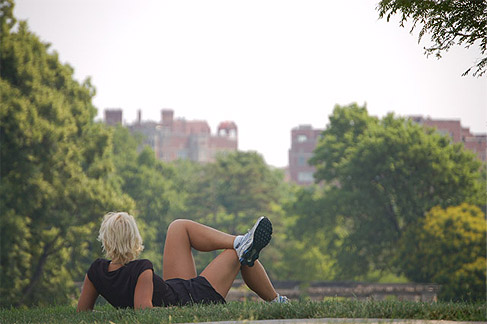
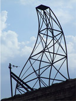
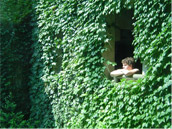
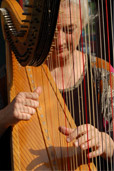
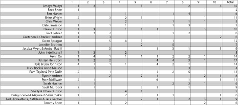

final votes!
Lot's of votes to tally this year and alot of great photos! Congratulations to this year's winner... Ryan McElwain. Coming in close second was a three way from Gwen Sprague, Jennifer Brothers and the team of Pam Taylor and Pete Dulin. We'll post exact vote tallies tomorrow to give you an idea of who voted on what photo. Stay tuned!Urban Photo Safari 2006 Winning Image - by Ryan McElwain

Three way tie for runner-up
Gwen Sprague

Jennifer Brothers

Pam Taylor & Pete Dulin

Contestant Final Vote Tally
click image for larger view
